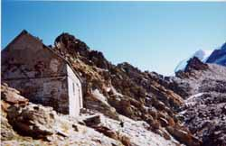

baraque forestière des Rognes (2760 m)

Départ : parking du Crozat (1410 m)
Aller : 6,4 km, +1258 m, 228 min
Retour : 3,5 km, - 641 m, 86 min
Difficulté : EE
Période : mi juillet - mi septembre
Remarque : parcours haute montagne - descendre du Nid d’Aigle au col de Voza par le tramway TMB.
Bibliographie : 30 balades autour de St Gervais (balade 13).
Monter par l’itinéraire AsF© 16.2 (lire page 119) ; au replat de l’Are, poursuivre tout droit. Le sentier domine le glacier de Bionnassay, surmonte un ressaut par deux échelles et traverse sur le Nid d’Aigle.
Poursuivre par le sentier balisé, début de la voie normale du Mont Blanc (lire page 143). Le col supérieur des Rognes (2780 m) était, avant la construction du TMB, l’un des passages d’accès au Mont Blanc. Aujourd’hui l’accès est éboulé.